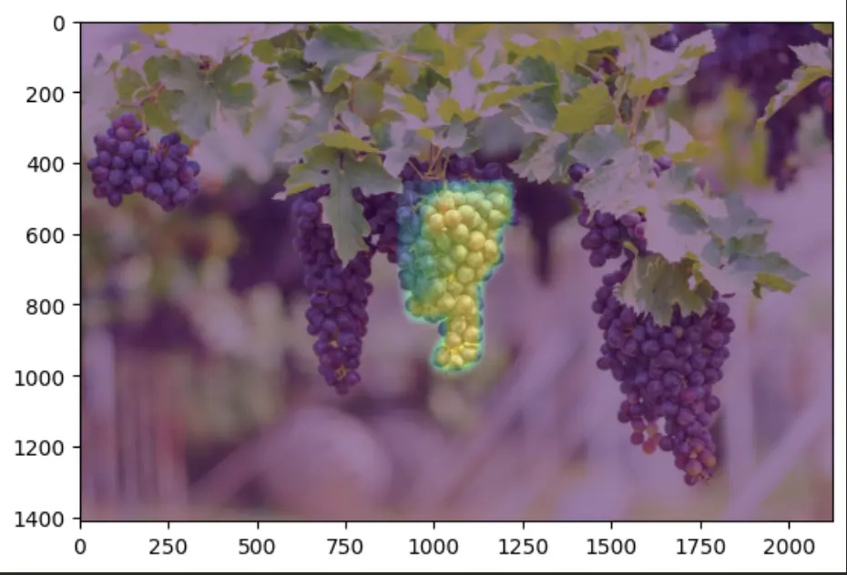
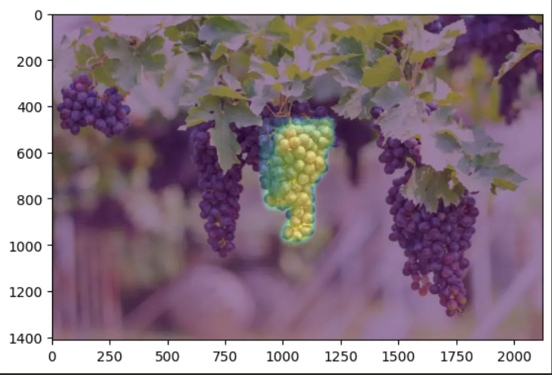

GrapeRob: A Grape Localization Pipeline for Automated Robotic Harvesting
 

A vision pipeline for grape state estimation to support automated robotic harvesting. This pipeline consists of a grape bunch and stem segmentation model built using PyTorch and the WGISD dataset, and a 3D reconstruction algorithm that combines the grape masks and a depth map to reconstruct a grape point cloud for pose estimation. Read more about it on the project website!
Crosswalk Buddy

Crosswalk Buddy is an independent research project under UM Robotics with the goal of developing a robot that will increase safety in pedestrian spaces. The aim of this robot is to increase driver visibility of pedestrians in low visibility scenarios. There are two phases - HRI Research and Autonomy Software Development. We developed a simulation of the robot in a city environment to construct human trials to gauge the best proximities and positions of the robot that create a comfortable experience for the pedestrian. Parallely, we have been developing the autonomy stack for a real robot platform. Above, we use YOLOv3 and simple 1D Kalman Filtering to construct a vision system for pedestrian state estimation.